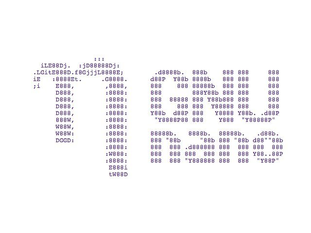

Me he puesto manos a la obra a como sacar el máximo de partido a nano, un editor de texto a veces desprestigiado frente a otros, pero uno de los más utilizados por su simplicidad.
Un usuario que acaba de introducirse en el mundo de la terminal y desea editar una archivo de configuración, la primera vez que utiliza vim o emacs, no sabe ni como salir. Nano, en cambio, soluciona este problema. Normalmente lo único que hacemos con un editor como nano es editar y guardar, pero en realidad podemos personalizarlo mucho mediante el archivo de configuración y podemos alcanzar un gran nivel de productividad.

En siguientes artículos os hablaré más de como alcanzarconseguir todo esto, pero en esta primera entrega, vamos a compilar la última versión ya que he utilizado desde la versión 2 a la 4 y he encontrado muchísimas diferencias.
Así que para partir de un punto de partida en común y no encontrar errores en los archivos de configuración, voy a explicaros como compilar esta última versión.
Hay que instalar alguna dependencia necesaria.
sudo apt install libncursesw5-dev
Vamos a descargar, descomprimir el archivo y acceder a la carpeta de esta última versión publicada el 4 de octubre del 2019
wget https://nano-editor.org/dist/v4/nano-4.5.tar.gz
tar xfvz nano-4.5.tar.gz
cd nano-4.5
Ahora ejecutaremos los siguiente comandos:
./configure --prefix=/usr \
--sysconfdir=/etc \
--enable-utf8 \
--docdir=/usr/share/doc/nano-4.5 &&
make
Ahora necesitamos entrar como usuario root.
sudo su
make install &&
install -v -m644 doc/{nano.html,sample.nanorc} /usr/share/doc/nano-4.5
Vamos a comprobar si ya tenemos instalada la versión 4.5
nano --version
Publicado por Angel el Tuesday 12 November del 2019
También te puede interesar:
Powered by org-bash-blog
Written in OrgMode with Emacs and converted to HTML with Pandoc

Este obra está bajo una licencia de Creative Commons Reconocimiento-NoComercial-CompartirIgual 4.0 Internacional.